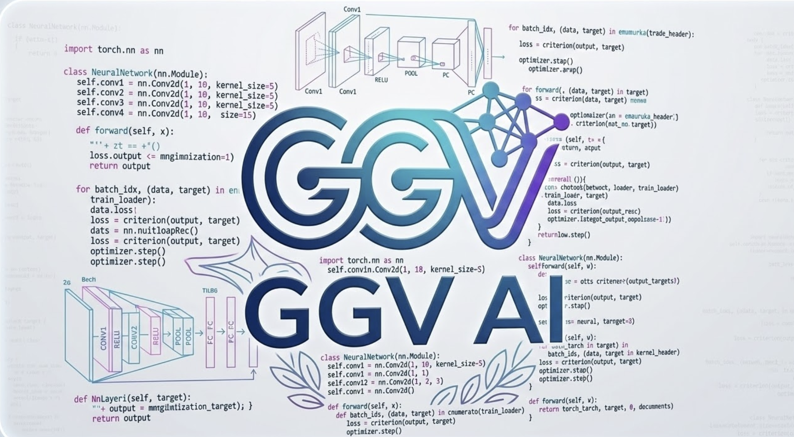

GGV AI is an smart ai ask any question and get accurate answers. smart ai = good ai Start using GGV AI today! Some AI isn't correct. This AI is accurate. Everything is good. smart , fast , reliable , no mistakes , and always here to help! ...
Ask anything...
1. what is ggv ai?
2. what is your name?
3. who are you?
4. what is your favorite color?
5. what is your favorite food?
6. what is your favorite animal?
7. goa oriented academy or step academy?
81. do you have feelings?
8. where can i learn coding?
59. who invented the internet?
60. who invented the computer?
83. what is html?
84. what is css?
85. what is javascript?
86. what is python?
9. how do i make a sandwitch?
10. is a hotdog a sandwitch?
79. thank you
78. goodbye
82. how do i stay healthy?
11. how big is the statue of librety?
12. how tall was the tallest man on earth?
13. how tall was the shortest man on earth?
14. who is the oldest man in the world?
15. what is the hardest exercise to do?
16. what is the world record for the longest plank?
17. what is the longest time someone has held their breath?
61. who was the first person on the moon?
18. generate me an image of nature
19. generate me an image of sea
20. generate me an image of space
21. what is the fastest animal on earth?
22. what is the slowest animal on earth?
23. what is the largest animal on earth?
24. what is the smallest animal on earth?
67. how many hearts does an octopus have?
25. how many planets are in the solar system?
26. what is the biggest planet in the solar system?
27. what is the smallest planet in the solar system?
28. how far is the moon from earth?
29. how far is the sun from earth?
30. what is the hottest planet in the solar system?
31. what is the coldest planet in the solar system?
32. how old is the earth?
33. how old is the universe?
34. what is the tallest mountain in the world?
35. what is the deepest ocean in the world?
36. what is the longest river in the world?
37. what is the largest country in the world?
38. what is the smallest country in the world?
39. what is the most spoken language in the world?
40. how many languages are there in the world?
41. what is the most populated country in the world?
42. how many continents are there?
43. how many oceans are there?
44. what is the capital of france?
45. what is the capital of the united states?
46. what is the capital of japan?
47. what is the capital of australia?
48. what is the capital of brazil?
49. what is 2 + 2?
50. what is 10 x 10?
51. what is the square root of 144?
52. what is pi?
53. how many seconds are in a day?
54. how many days are in a year?
55. what is the speed of light?
56. what is the speed of sound?
68. what is the hardest natural substance on earth?
69. what is the most common gas in the atmosphere?
70. what is the chemical symbol for water?
71. what is the chemical symbol for gold?
72. how many colors are in a rainbow?
73. what is the boiling point of water?
74. what is the freezing point of water?
57. who invented the telephone?
58. who invented the light bulb?
62. what year did world war 2 end?
63. what year did world war 1 start?
64. how many bones are in the human body?
65. how many teeth does a human have?
66. what is the largest organ in the human body?
75. what is the most popular sport in the world?
76. how many players are on a soccer team?
77. how many players are on a basketball team?
80. what is the meaning of life?